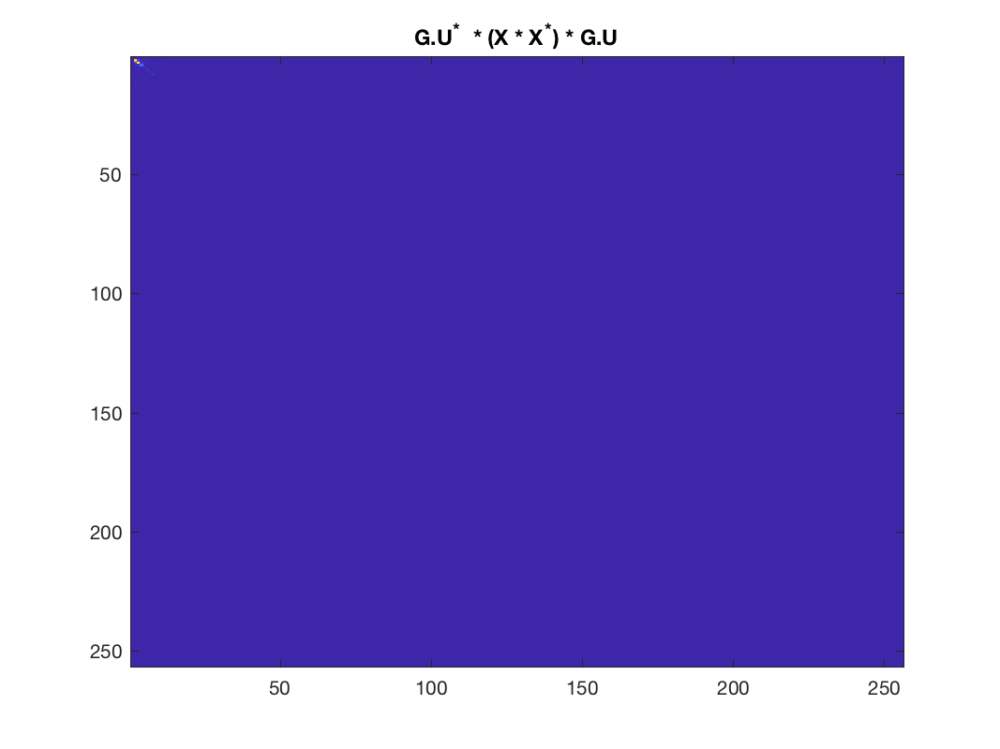

gsp_good_graph(G, X);
| G | the graph |
| X | a data matrix |
| param | structure of optional parameters |
| index | the computed index |
A wrapper function with which one may test how well a given graph G, matches some data X.
Example:
G = gsp_2dgrid(16); X = pinv(full(G.L)) * randn(G.N, G.N); param.verbose = 1; param.index = 'tcer'; index = gsp_good_graph_index(G, X, param) param.index = 'stationarity'; index = gsp_good_graph_index(G, X, param)
This code produces the following output:
index =
0.0057
index =
0.9910
